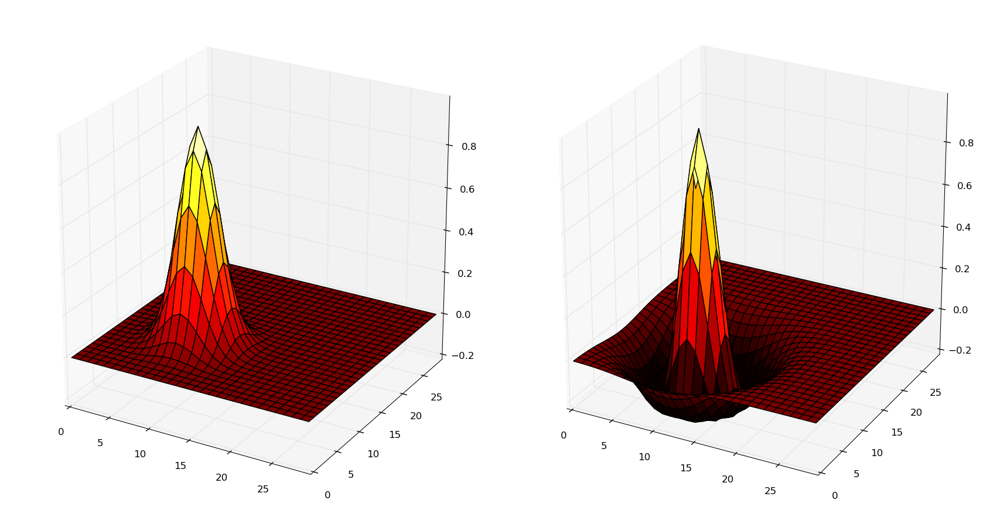

Connectivity#
There are basically four methods to instantiate projections:
- By using a built-in connector method.
- By using a saved projection.
- By loading dense or sparse matrices.
- By defining a custom connector method.
Available connector methods#
For further detailed information about these connectors, please refer to the library reference Projections.
connect_all_to_all#
All neurons of the post-synaptic population form connections with
all neurons of the pre-synaptic population (dense connectivity).
Self-connections are avoided by default, but the parameter
allow_self_connections can be set to True:
proj.connect_all_to_all(weights=1.0, delays=2.0, allow_self_connections=False)
The weights and delays arguments accept both single float values
(all synapses will take this initial value), as well as random objects
allowing to randomly select the initial values for different synapses:
proj.connect_all_to_all(weights=Uniform(0.0, 0.5))
connect_one_to_one#
A neuron of the post-synaptic population forms a connection with only one neuron of the pre-synaptic population. The order depends on the ranks: neuron 0 is connected with neuron 0 and so on. It is advised that the pre- and post-populations have the same size/geometry, especially when using population views.
pop1 = Population((20, 20), Neuron(parameters="r=0.0"))
pop2 = Population((10, 10), Neuron(equations="r=sum(exc)"))
proj = Projection(pop1[5:15, 5:15], pop2, 'exc')
proj.connect_one_to_one(weights=1.0)
Weights and delays also accept random distributions.
Below is a graphical representation of the difference between all_to_all and one_to_one:
connect_gaussian#
A neuron of the post-synaptic population forms a connection with a
limited region of the pre-synaptic population, centered around the
neuron with the same normalized position. Weight values are initialized
using a Gaussian function, with a maximal value amp for the neuron of
same position and decreasing with distance (standard deviation sigma):
where \((x, y)\) is the position of the pre-synaptic neuron (normalized to \([0, 1]^d\)) and \((x_c, y_c)\) is the position of the post-synaptic neuron (normalized to \([0, 1]^d\)). A = amp, sigma = \(\sigma\).
In order to void creating useless synapses, the parameter limit can be
set to restrict the creation of synapses to the cases where the value of
the weight would be superior to limit*abs(amp). Default is 0.01 (1%).
Self-connections are avoided by default (parameter
allow_self_connections).
The two populations must have the same number of dimensions, but the number of neurons can vary as the positions of each neuron are normalized in \([0, 1]^d\):
proj.connect_gaussian( amp=1.0, sigma=0.2, limit=0.001)
connect_dog#
The same as connect_gaussian, except weight values are computed using a Difference-of-Gaussians (DoG), usually positive in the center, negative a bit further away and small at long distances.
Weights smaller than limit * abs(amp_pos - amp_neg) are not created
and self-connections are avoided by default (parameter
allow_self_connections):
proj.connect_dog(amp_pos=1.0, sigma_pos=0.2,
amp_neg=0.3, sigma_neg=0.7, limit=0.001)
The following figure shows the example of a neuron of coordinates (10, 10) in the post-synaptic population, which is connected through the gaussian (left) and dog (right) projections to a population of geometry 30*30. The X and Y axis denote the coordinates of the pre-synaptic neurons, while the Z axis is the weight value.

connect_fixed_number_pre#
Each neuron in the post-synaptic population receives connections from a fixed number of neurons of the pre-synaptic population chosen randomly. It may happen that two post-synaptic neurons are connected to the same pre-synaptic neuron and that some pre-synaptic neurons are connected to nothing:
proj.connect_fixed_number_pre(number = 20, weights=1.0)
weights and delays can also take a random object.
connect_fixed_number_post#
Each neuron in the pre-synaptic population sends a connection to a fixed number of neurons of the post-synaptic population chosen randomly. It may happen that two pre-synaptic neurons are connected to the same post-synaptic neuron and that some post-synaptic neurons receive no connection at all:
proj.connect_fixed_number_post(number = 20, weights=1.0)
The following figure shows the fixed_number_pre (left) and
fixed_number_post projections between two populations of 4 neurons,
with number=2. In fixed_number_pre, each post-synaptic neuron
receives exactly 2 connections, while in fixed_number_post, each
pre-synaptic neuron send exactly two connections:
connect_fixed_probability#
For each post-synaptic neuron, there is a fixed probability that it forms a connection with a neuron of the pre-synaptic population. It is basically a all_to_all projection, except some synapses are not created, making the projection sparser:
proj.connect_fixed_probability(probability = 0.2, weights=1.0)
Important
If a single value is used for the weights argument of
connect_all_to_all, connect_one_to_one, connect_fixed_probability,
connect_fixed_number_pre and connect_fixed_number_post, and the
default synapse is used (no synaptic plasticity), ANNarchy will generate
a single weight value for all the synapses of the projection, not one
per synapse.
This allows to save a lot of memory and improve performance. However, if
you wish to manually change the weights of some of the synapses after
the creation, you need to force the creation of one value per synapse by
setting force_multiple_weights=True in the call to the connector.
Saved connectivity#
It is also possible to build a connection pattern using data saved during a precedent simulation. This is useful when:
- pre-learning is done in another context;
- a connector method for static synapses is particularly slow (e.g. DoG), but loading the result from a file is faster.
The connectivity of a projection can be saved (after compile()) using:
proj.save_connectivity(filename='proj.npz')
The filename can used relative or absolute paths. The data is saved in a binary format:
- Compressed Numpy format when the filename ends with
.npz. - Compressed binary file format when the filename ends with
.gz. - Binary file format otherwise.
It can then be used to instantiate another projection:
proj.connect_from_file(filename='proj.npz')
Only the connectivity (which neurons are connected), the weights and delays are loaded. Other synaptic variables are left untouched. The pre- and post-synaptic population must have the same size during saving and loading.
From connectivity matrices#
One can also create connections using Numpy dense matrices or Scipy sparse matrices.
connect_from_matrix#
This method accepts a Numpy array to define the weights of the
projection (and optionally the delays). By default, the matrix should
have the size (post.size, pre.size), so that the first index
represents a post-synaptic neuron and the second the pre-synaptic
neurons. If your matrix is defined in the reversed order, you can either
transpose it or set the pre_post argument to True.
This method is useful for dense connectivity matrices (all-to-all). If
you do not want to create some synapses, the weight value should be set
to None.
The following code creates a synfire chain inside a population of 100 neurons:
N = 100
proj = Projection(pop, pop, 'exc')
# Initialize an empty connectivity matrix
w = np.array([[None]*N]*N)
# Connect each post-synaptic neuron to its predecessor
for i in range(N):
w[i, (i-1)%N] = 1.0
# Create the connections
proj.connect_from_matrix(w)
Connectivity matrices can not work with multi-dimensional coordinates, only ranks are used. Population views can be used in the projection, but the connection matrix must have the corresponding size:
proj = Projection(pop[10:20], pop[50:60], 'exc')
# Create the connectivity matrix
w = np.ones((10, 10))
# Create the connections
proj.connect_from_matrix(w)
connect_from_sparse#
For sparse connection matrices, the Numpy array format may have a huge memory overhead if most of its values are None. It is possible to use Scipy sparse matrices in that case. The previous synfire chain example becomes:
from scipy.sparse import lil_matrix
proj = Projection(pop, pop, 'exc')
w = lil_matrix((N, N))
for i in range(N):
w[i, (i+1)%N] = 1.0
proj.connect_from_sparse(w)
Note
Contrary to connect_from_matrix(), the first index of the sparse
matrix represents the pre-synaptic neurons, not the post-synaptic
ones. This is for compatibility with other neural simulators.
connect_from_sparse() accepts lil_matrix, csr_matrix and
csc_matrix objects, although lil_matrix should be preferred for its
simplicity of element access.
User-defined patterns#
This section describes the creation of user-specific connection patterns
in ANNarchy, if the available patterns are not enough. A connection
pattern is simply implemented as a method returning a CSR (compressed
sparse-row) object containing all the necessary information to create
the synapses.
A connector method must take on the first position the pre-synaptic population (or a subset of it) and on the second one the post-synaptic population. Other arguments are free, but should be passed when creating the projection.
probabilistic_pattern(pre, post, <other arguments>)
As an example, we will recreate the fixed_probability connector method, building synapses with a given probability. For this new pattern we need a weight value (common for all synapses) and a probability value as additional arguments. We consider that no delay is introduced in the synaptic transmission..
from ANNarchy import *
def probabilistic_pattern(pre, post, weight, probability):
synapses = CSR()
... pattern code comes here ...
return synapses
fixed_probability in Python#
The connector method needs to return a CSR object storing the
connectivity. For each post-synaptic neuron receiving synapses, a list
of pre-synaptic ranks, weight values and delays must be added to the
structure. If you use 2D or 3D populations you need to transform the
coordinates into ranks with the rank_from_coordinates function.
import random
from ANNarchy import *
def probabilistic_pattern(pre, post, weight, probability):
# Create a compressed sparse row (CSR) structure for the connectivity matrix
synapses = CSR()
# For all neurons in the post-synaptic population
for post_rank in xrange(post.size):
# Decide which pre-synaptic neurons should form synapses
ranks = []
for pre_rank in xrange(pre.size):
if random.random() < probability:
ranks.append(pre_rank)
# Create weights and delays arrays of the same size
values = [weight for i in xrange(len(ranks)) ]
delays = [0 for i in xrange(len(ranks)) ]
# Add this information to the CSR matrix
synapses.add(post_rank, ranks, values, delays)
return synapses
The first for - loop iterates over all post-synaptic neurons in the
projection. The inner for - loop decides for each of these neurons if
a synapse with a pre-synaptic neuron should be created, based on the
value probability provided as argument to the function.
The lists values and delays are then created with the same size as
ranks (important!), and filled with the desired value. All this
information is then fed into the CSR matrix using the
add(post_rank, ranks, values, delays) method.
Note
Building such connectivity matrices in Python can be extremely slow, as Python is not made for tight nested loops. If the construction of your network lasts too long, you should definitely write this function in Cython.
Warning
The add() should be only called once per post-synaptic neuron! If not,
ANNarchy will have to reorder its internal representations and this will
be really slow.
Usage of the pattern
To use the pattern within a projection you provide the pattern method to
the connect_with_func method of Projection
proj = Projection(
pre = pop1,
post = pop2,
target = 'inh'
)
proj.connect_with_func(
method=probabilistic_pattern,
weight=1.0,
probability=0.3
)
method is the method you just wrote. Extra arguments (other than pre
and post) should be passed with the same name.
fixed_probability in Cython#
For this example, we will create a Cython file CustomPatterns.pyx in
the same directory as the script. Its content should be relatively
similar to the Python version, except some type definitions:
# distutils: language = c++
import random
import ANNarchy
cimport ANNarchy.core.cython_ext.Connector as Connector
def probabilistic_pattern(pre, post, weight, probability):
# Typedefs
cdef Connector.LILConnectivity synapses
cdef int post_rank, pre_rank
cdef list ranks, values, delays
# Create a LILConnectivity structure for the connectivity matrix
synapses = Connector.LILConnectivity()
# For all neurons in the post-synaptic population
for post_rank in xrange(post.size):
# Decide which pre-synaptic neurons should form synapses
ranks = []
for pre_rank in xrange(pre.size):
if random.random() < probability:
ranks.append(pre_rank)
# Create weights and delays arrays of the same size
values = [weight for i in xrange(len(ranks)) ]
delays = [0 for i in xrange(len(ranks)) ]
# Add this information to the LILConnectivity matrix
synapses.add(post_rank, ranks, values, delays)
return synapses
The only differences with the Python code are:
- The module
Connectorwhere theLILConnectivityconnection matrix class is defined should be cimported with:
cimport ANNarchy.core.cython_ext.Connector as Connector
- Data structures should be declared with
cdefat the beginning of the method:
# Typedefs
cdef Connector.LILConnectivity synapses
cdef int post_rank, pre_rank
cdef list ranks, values, delays
To allow Cython to compile this file, we also need to provide with a
kind of \"Makefile\" specifying that the code should be generated in
C++, not C. This file should have the same name as the Cython file but
end with .pyxbld, here : CustomPatterns.pyxbld.
from distutils.extension import Extension
import ANNarchy
def make_ext(modname, pyxfilename):
return Extension(name=modname,
sources=[pyxfilename],
include_dirs = ANNarchy.include_path(),
extra_compile_args=['-std=c++11'],
language="c++")
Note
This .pyxbld is generic, you don't need to modify anything, except
its name.
Now you can import the method probabilistic_pattern() into your Python
code using the pyximport module of Cython and build the Projection
normally:
import pyximport; pyximport.install()
from CustomPatterns import probabilistic_pattern
proj.connect_with_func(method=probabilistic_pattern, weight=1.0, probability=0.3)
Writing the connector in Cython can bring speedups up to 100x compared to Python if the projection has a lot of synapses.